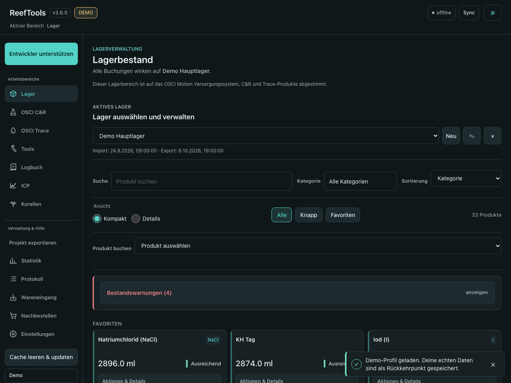
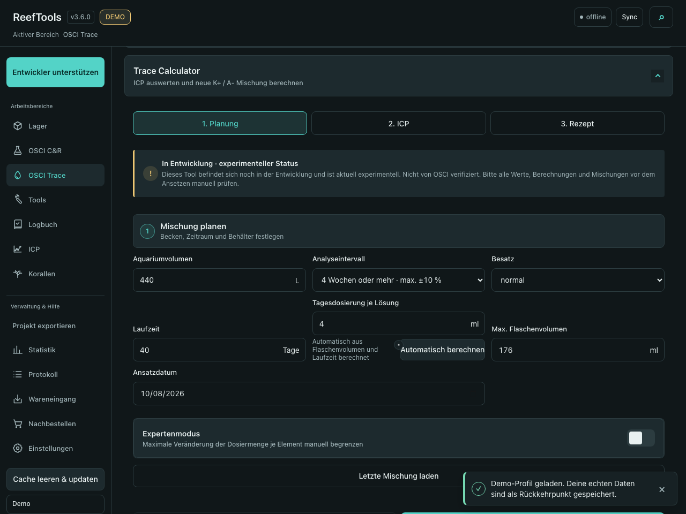
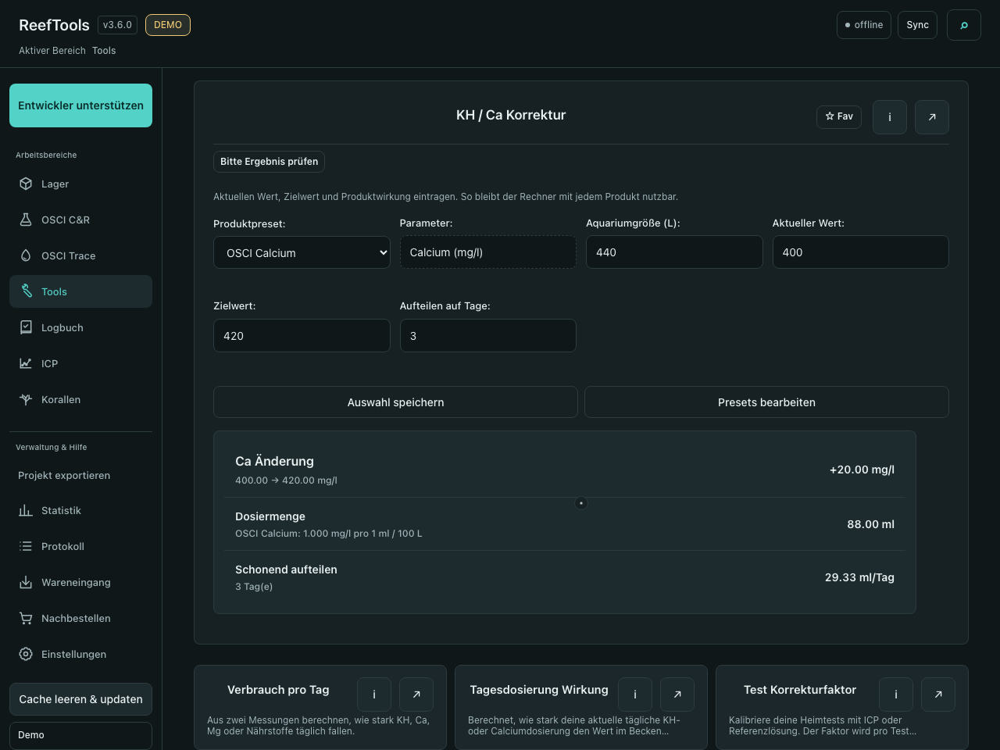
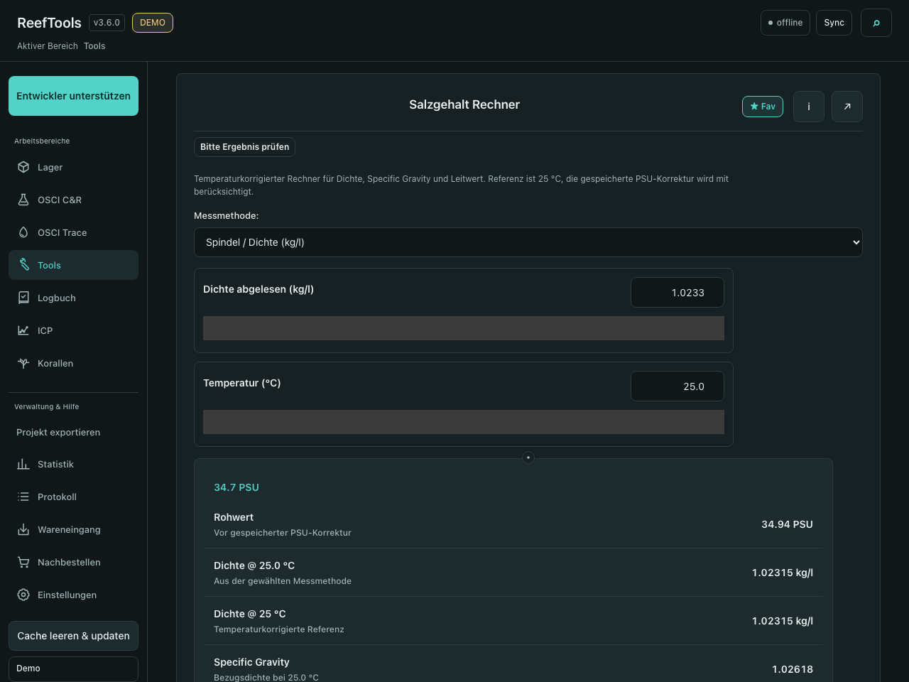
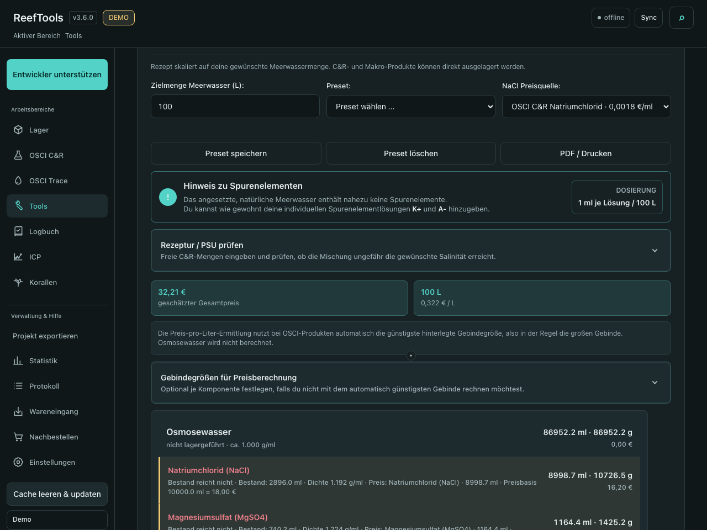
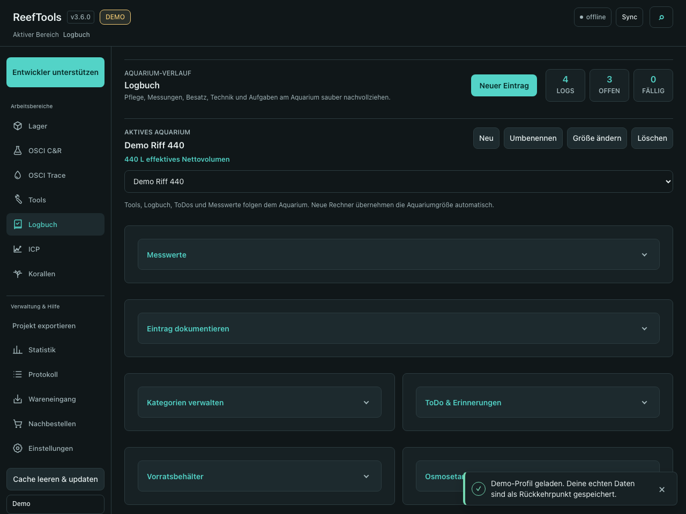
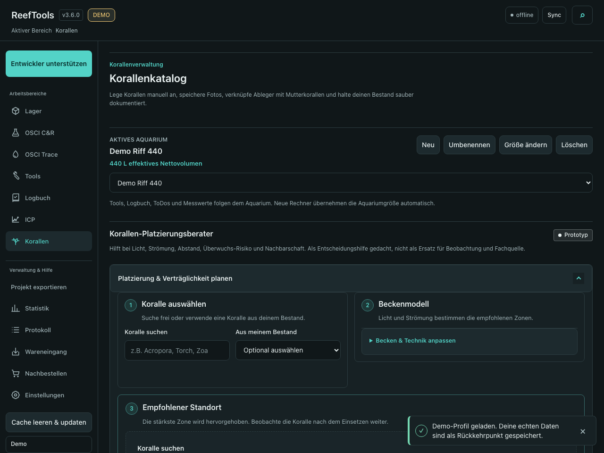
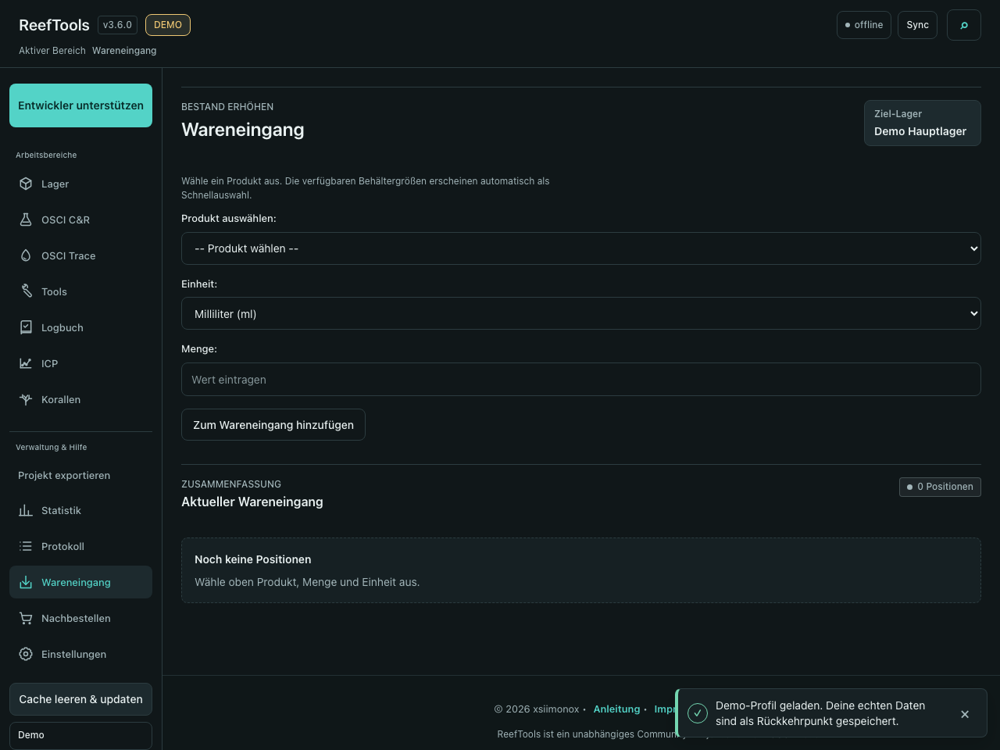
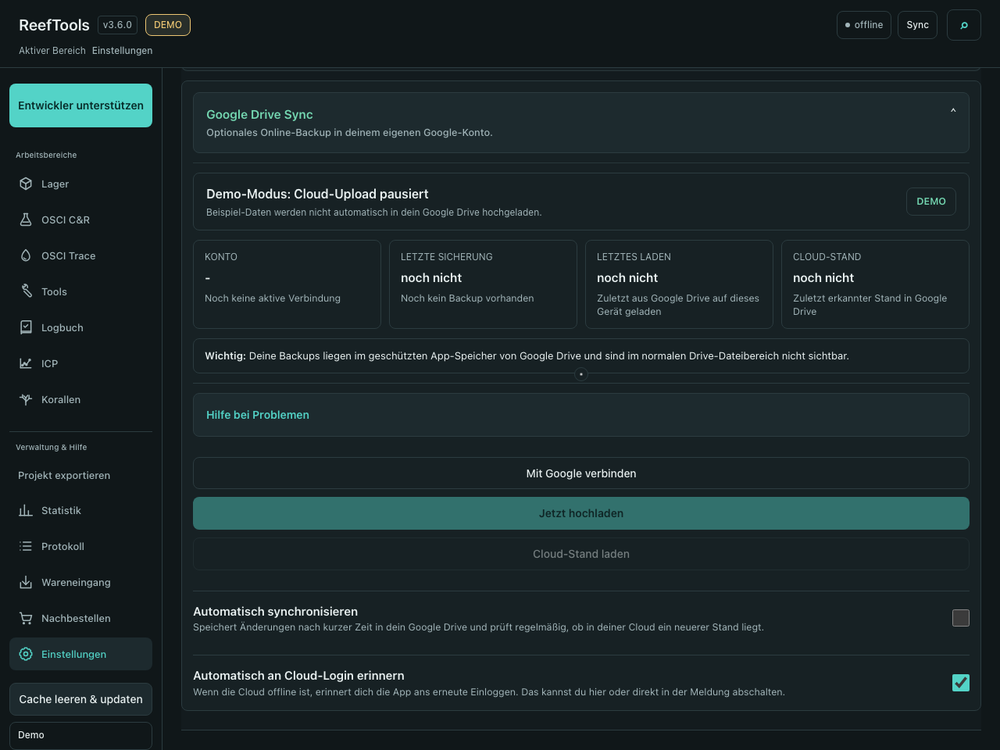

Das Suchsymbol in der Kopfzeile findet Seiten, Rechner und Einstellungen. Auf dem Desktop funktionieren zusätzlich Strg/Cmd + K und Strg/Cmd + F.
Reeftools.de
Anleitung
Der praxisnahe Einstieg in ReefTools: Aquarium anlegen, Daten sichern, ICP und Trace verbinden, Bestände pflegen und die passenden Rechner schnell finden.
Unabhängiges Community-Projekt: ReefTools wird eigenständig entwickelt und ist nicht OSCI Motion. OSCI Motion wird dort genannt, wo Produkte, Quellen oder externe Rechner verwendet werden.
Rechner, Importfunktionen und Assistenten können Fehler enthalten. Prüfe Dosierungen, Wasserwerte, PDF-Importe und Handlungsempfehlungen immer fachlich, bevor du sie am Aquarium umsetzt.
In wenigen Minuten
Globale Suche
Direkte Tool-Links
Demo-Profil
Schnellstart & Orientierung
ReefTools speichert zunächst lokal im verwendeten Browser. Lege zuerst dein Aquarium an, trage nur die Bereiche ein, die du wirklich nutzt, und richte danach eine Sicherung ein.
- Aquarium auswählen: Tools, Logbuch, ToDos, Messwerte, ICPs, Trace-Historie und Korallen gehören zum aktiven Aquarium.
- Lager pflegen: Produktbestände, Ein- und Auslagerungen sowie Nachbestellungen gehören zum aktiven Lager.
- Daten sichern: Verbinde Google Drive oder erstelle regelmäßig ein Projekt-Backup als Datei.
- Nur benötigte Funktionen zeigen: In Einstellungen → Ansicht & Inhalte lassen sich Seiten, Tools sowie OSCI-spezifische Funktionen ausblenden.
Geöffnete Rechner erhalten eine eigene Adresse. Über das Link-Symbol am Tool kannst du genau diesen Rechner teilen.
Ein vollständig gefülltes Beispielsystem kann in den Einstellungen geladen werden. Die deutlich markierte Demo lässt sich jederzeit wieder gegen das eigene Profil tauschen.
Startseite
Übersicht
Die optionale Übersicht ist dein schneller Blick auf den aktuellen Zustand. Kacheln zeigen Lagerwarnungen, Messwerte, Aufgaben, Füllstände, Korallen und wichtige Hinweise. Viele Kacheln führen direkt in den passenden Bereich.
- Individuell anpassbar: In Einstellungen → Übersicht anpassen wählst du Kacheln und Messwert-Diagramme selbst aus.
- Pro Aquarium: Korallen, ToDos und Messwert-Grafiken folgen dem aktiven Aquarium.
- Optional: Ist die Übersichtsseite ausgeblendet, kann sie unter Ansicht & Inhalte wieder aktiviert werden.
- Cloud Status zeigt, ob Google Drive Sync online, offline oder ungesynct ist.

OSCI Versorgungssystem
Lager
Im Lager verwaltest du deine Bestände. Produkte können eingelagert, ausgelagert, korrigiert, verborgen und für Nachbestellungen überwacht werden.
- Einlagern: Bestand hinzufügen, optional mit Behältergröße, Tara und Einheit.
- Auslagern: Menge buchen oder neuen Zielbestand eintragen. Danach kannst du entscheiden, ob nur korrigiert oder mit Protokoll ausgelagert wird.
- Live-Umrechnung: Bei ml und g wird anhand der Dichte direkt umgerechnet, wenn die Produktdaten vorhanden sind.
- Prognose: Eine Verbrauchsprognose entsteht erst sinnvoll ab mindestens zwei Entnahmen.
- Produktgleichheit: Fluor und Natriumfluorid werden bei unterstützten Buchungen gemeinsam geprüft. Vor einer Ersatz-Auslagerung fragt ReefTools nach.
- Eigene Produkte: Artikel, Gebinde, Tara, Preise und Shop-Links lassen sich in den Einstellungen ergänzen.
- TXT/PDF Export: Lagerstände können als Datei dokumentiert und später wieder importiert werden.
OSCI Versorgungssystem
C&R
Der C&R Bereich hilft beim Auslagern von Custom & Repair Produkten für Wasserwechsel und Korrekturen. Nach dem Import oder manuellen Eintragen siehst du benötigte Mengen und ob dein Lagerbestand reicht.
Vor dem Einfügen einer Liste kannst du zwischen R1 Defizite, R2 Wasserwechsel und R3 direkte Zugabe wählen. ReefTools merkt sich die zuletzt gewählte Arbeitsweise und zeigt die passende Kurzbeschreibung an.
- Bevorzugte Einheit: Du kannst einstellen, ob ml oder g zuerst und groß angezeigt wird.
- Bestandsprüfung: Jede Position zeigt, wie viel nach der Auslagerung übrig bleibt.
- Demo-Daten: Füllt den Eingabebereich mit einem vollständigen Beispiel, ohne dass du eine echte Liste benötigst.
- Ausgleichslisten: Standardmäßig eingeklappt, damit die Seite übersichtlich bleibt.
- PDF / Drucken: Aus eingefügten C&R-Daten kannst du eine übersichtliche Arbeitsfolie zum Drucken oder Speichern erstellen.
- PDF-Import: Der direkte PDF-Analyseimport ist pausiert. Nutze Copy & Paste aus der Auswertung oder die manuelle Eingabe, weil PDF-Erkennung je nach Datei fehleranfällig sein kann.
OSCI Versorgungssystem
Trace
Trace unterstützt Kationen- und Anionen-Mischungen, gespeicherte ICPs, historische Rezepte, Restlösungen und lagergeführte Auslagerungen. Der Arbeitsablauf führt von der Startlösung über die ICP bis zur nächsten Mischung.
- Startlösung: Für den ersten Ansatz OSCI-Preset oder eigene Rezeptur, Aquariumvolumen und Laufzeit festlegen. Nur diese erste Mischung darf ohne ICP gespeichert werden.
- Gespeicherte ICP verwenden: Eine bereits im ICP-Bereich importierte Analyse direkt übernehmen. nn wird als 0 behandelt; bei nwb nutzt ReefTools die obere angegebene Nachweisgrenze.
- Vergangene Mischungen: Reef-Manager-Rezepte oder handschriftlich dokumentierte Altansätze manuell zur Historie hinzufügen und der passenden ICP zuordnen.
- Historie & Analyse: Einträge bearbeiten und festlegen, ob sie in die nächste Berechnung einfließen. Ausgangsmengen werden passend zu neuer Laufzeit und neuem Aquariumvolumen skaliert.
- Restlösung weiterverwenden: Restmenge oder Resttage angeben und zwischen optimal angepasster Lösung sowie unveränderter Tagesdosierung wählen. Alte und neue Dosiermenge werden gegenübergestellt. Restlösungen höchstens einmal ergänzen.
- Expertenmodus: Maximale prozentuale Änderung nach unten und oben je Element begrenzen und eigene Grenzwert-Presets speichern.
- Speichern & Auslagern: Erst nach vollständiger Bestandsprüfung wird die Mischung gespeichert, aus dem Lager gebucht und protokolliert. Rezepte und Weiterverwendungspläne können als PDF vorbereitet werden.
Wichtig: Der Trace Calculator ist eine experimentelle, regelbasierte Rechenhilfe und keine chemische Simulation. Jede Mischung vor dem Ansetzen fachlich prüfen.

Analyse & Verlauf
ICP Daten
Der ICP-Bereich speichert Laborwerte pro Aquarium, zeigt Verläufe, Optimalwerte und Auffälligkeiten und hilft beim Vergleich über mehrere Analysen.
- OSCI Lab Werte einfügen: Kopiere die sichtbare Labortabelle oder den HTML-/Elemente-Text der Laborseite in das Importfeld.
- Metadaten: Analyse-ID, Aquariumvolumen sowie „Probe gezogen am“ werden übernommen. Für den Verlauf zählt das Entnahmedatum, nicht das spätere Messdatum.
- Vorschau prüfen: Vor dem Speichern zeigt ReefTools Kategorien, Werte, Einheiten und Warnungen. Gleicher Name oder gleiches Datum erzeugen eine Duplikatwarnung.
- Nachweisgrenzen: nn bedeutet nicht nachweisbar und wird rechnerisch als 0 gespeichert. Bei nwb 0,1–0,25 wird für Trace vorsichtig der obere Wert 0,25 verwendet und entsprechend gekennzeichnet.
- Graphen: Anzeige der letzten 1, 2, 5 oder 10 ICPs, mehrere frei wählbare Graphen und die jeweiligen Optimalwerte.
- Bearbeiten: Gespeicherte ICPs sind zunächst eingeklappt und können bearbeitet oder gelöscht werden.
- Trace-Verknüpfung: Dieselbe ICP kann anschließend im Trace Calculator ausgewählt und historischen Mischungen zugeordnet werden. Ein zweiter Import ist nicht nötig.
- PDF/Screenshot: Werte aus Bild-PDFs oder Screenshots sind nicht zuverlässig auslesbar und sollten nicht als sichere Importquelle genutzt werden.
Rechner
01
Dosierung, Verbrauch & Messen
02
Wasserwechsel & Salinität
03
Mischen & Rezepte
04
Sangokai A-Z
05
Hilfe & Quellen
Barium, Lithium & Molybdän
KH / Ca Korrektur
Verbrauch pro Tag
Tagesdosierung Wirkung
Test Korrekturfaktor
Hanna P → PO4
Salifert Umrechner
Nutrition Rechner
N‑Ratio Monitor
Salzgehalt Rechner
Salzgehalt korrigieren
Nettovolumen berechnen
Wasserwechsel Effekt
Adsorber Durchfluss
Meerwasser aus C&R
C&R NaCl aus Pulver
Makro-Elemente
Sangokai A-Z Assistent
Links & Nachschlagen
Tools
Die Tools sind in Arbeitsbereiche sortiert und standardmäßig eingeklappt. Suche oben auf der Tool-Seite oder über die globale Suche nach einem Rechner. Favoriten und direkte Links erleichtern den späteren Zugriff.
KH/Ca, Tagesdosierung, Ba/Li/Mo, Verbrauch, N‑Ratio, Testkorrekturen und Messwert-Umrechner.
Salzgehalt, Dichte, Specific Gravity, PSU-Korrektur, Nettovolumen und Wasserwechsel-Effekt.
C&R Meerwasser samt Kosten, NaCl aus Pulver sowie Makro-Elemente auf die Zielmenge skalieren.
Die lokal eingebaute Wissensbasis durchsuchen und Fundstellen im Original gegenprüfen.
Anleitung, OSCI Motion Links, Meerwasser-Lexikon und Buchtipps zentral öffnen.
Dosierung, Verbrauch & Messen
Berechnet die getrennte Direktzugabe aus ICP-Istwert, Aquariumvolumen und frei wählbarem Ziel innerhalb des Referenzbereichs. Die vorsichtige Anzahl der Gaben wird vorgeschlagen.
Berechnet die Dosiermenge, um KH oder Calcium von Istwert auf Zielwert zu bringen.
Berechnet aus zwei Messungen, wie stark ein Wert täglich fällt oder steigt.
Zeigt, wie stark eine tägliche KH- oder Calciumdosierung den Wert rechnerisch anhebt.
Gleicht Heimtests mit ICP oder Referenzlösung ab und speichert den Faktor.
Rechnet Phosphor ppb vom Hanna Checker in Phosphat mg/l um.
Wandelt Salifert Spritzen-Restwerte für Calcium oder KH in Messwerte um.
Berät zu NO3/PO4 und berechnet Dosierungen für N, P, La und Kohlenstoff.
Bindet den externen OSCI-Motion-Rechner ein. NO3 und TNb lassen sich zusätzlich im ReefTools-Logbuch speichern und als Verhältnisverlauf beobachten; Orientierung 1 : 3.
Wasserwechsel & Salinität
Rechnet Dichte, Specific Gravity, Leitwert und PSU mit Temperaturbezug um.
Gibt eine Orientierung, wie du eine Abweichung zur Ziel-PSU ausgleichst.
Schätzt aus geplanter und tatsächlich gemessener PSU-Änderung das reale Wasservolumen des Systems.
Zeigt den rechnerischen Nachher-Wert nach einem Wasserwechsel.
Berechnet einen langsamen kontrollierten Durchfluss für Adsorber.
Mischen & Lösungen
Skaliert das Rezept und berechnet Kosten aus der gewählten Gebindegröße. Natriumchlorid-Pulver kann mit einem eigenen Preis pro kg hinterlegt werden.
Berechnet NaCl Pulver und Osmosewasser für flüssiges C&R Natriumchlorid.
Skaliert Rezepte für KH-Tag, KH-Nacht, Calcium und Magnesium.
Wissen & Quellen
Durchsucht die lokale Wissensbasis. Testversion, Antworten immer prüfen.
Sammelt Anleitung, OSCI Tools, Meerwasser Lexikon, Sangokai A-Z und Buchtipps.



Aquarium-Verlauf
Logbuch, Messwerte & ToDos
Das Logbuch ist an Aquarien gekoppelt, nicht an Lager. So kannst du mehrere Becken sauber dokumentieren.
- Logs: Einträge mit Datum, Kategorie und Notizen speichern, bearbeiten, löschen und nach Kategorie filtern.
- Messwerte: KH, Ca, Mg, PO4, NO3, Salzgehalt und eigene Werte eintragen. Für Salzgehalt stehen PSU, Dichte und Specific Gravity zur Auswahl; die eingegebene Genauigkeit bleibt erhalten.
- ToDos: Wiederkehrende Aufgaben mit Intervall, letzter Ausführung und nächster Fälligkeit verwalten.
- Geräteverwaltung: Lampen, Pumpen und weitere Technik mit Seriennummer, Kaufdatum, Garantie und Wartungsintervall dokumentieren.
- Problem-Tagebuch: Cyanos, Dinos, Algen, Gewebeverlust und andere Auffälligkeiten mit Maßnahme und Verlauf festhalten.
- Notfallmodus: Checklisten für Stromausfall, Pumpenausfall, Dosierfehler und Überdosierung griffbereit halten.
- Vorratsbehälter & Osmosetank: Füllstände, Verbrauch und Restlaufzeit überwachen.

Bestand
Korallen
Die Korallenverwaltung kombiniert deinen eigenen Bestand mit einer Platzierungs- und Verträglichkeitshilfe. Empfehlungen unterstützen die Entscheidung, ersetzen aber nicht die Beobachtung im eigenen Aquarium.
- Suche: Wissenschaftliche und gängige deutsche Namen werden berücksichtigt, zum Beispiel Bartkoralle für Duncanopsammia.
- Platzierungsberater: Beckenmaße, Lichtzone und Strömung eintragen und einen verständlichen Standortvorschlag im Aquarium erhalten.
- Verträglichkeit: Abstand, Nesselkraft, Überwuchs-Risiko und geeignete Nachbarschaft vergleichen.
- Eigene Profile: Nicht gelistete Korallen mit Licht-, Strömungs- und Platzierungsanforderungen ergänzen.
- Fotos: Hauptbild und weitere Bilder aus Kamera oder Fotobibliothek zuweisen.
- Ableger: Ableger können einer Mutterkoralle zugeordnet werden.
- Kaufpreis: Anschaffungskosten je Koralle dokumentieren.
- Abgabe: Abgegebene Korallen können gelöscht oder in einer separaten Abgabeliste mit Kontakt hinterlegt werden.

Bestandspflege
Wareneingang, Nachbestellen, Statistik & Protokoll
Diese Bereiche helfen bei wiederkehrender Lagerarbeit und bei der Kontrolle deiner Bestände.
- Wareneingang: Mehrere Produkte gesammelt einlagern.
- Nachbestellen: Produkte mit niedrigem Bestand sammeln, Mengen prüfen und vorhandene Shop-Links einzeln öffnen. Mehrere Tabs können durch den Browser-Popup-Schutz begrenzt werden.
- Statistik: Lagergebundene Auswertungen und Prognosen. Zugriff nur mit Schreibberechtigung.
- Protokoll: Lagergebundene Buchungshistorie. Nur Lesefreigabe erlaubt keine Änderungen.

Datensicherung
Google Drive Sync & Backup
ReefTools speichert lokal im Browser und kann zusätzlich App-Daten in deinem eigenen Google-Drive-App-Speicher ablegen. Diese Dateien sind in Google Drive normalerweise nicht sichtbar, gehören aber zu deinem Konto.
- Cloud Status: Grün bedeutet online, rot offline, gelb ungesyncte Änderung.
- Sync in der Kopfzeile: Fragt, ob du hochladen, herunterladen oder die Cloud-Einstellungen öffnen möchtest.
- Upload: Sichert den vollständigen lokalen Projektstand einschließlich Lager, Aquarien, ICP, Trace-Historie, Logbuch, ToDos, Geräte, Probleme und Korallen.
- Download: Lädt den Cloud-Stand und speichert ihn anschließend wieder lokal im aktuellen Browser.
- Auto-Sync: Überträgt Änderungen verzögert im Hintergrund; die Kopfzeile zeigt während Upload und Download den Vorgang an.
- Wiederherstellung: Je nach Sicherungsstand können ältere Datenstände zurückgeholt werden.
- Lokale Backups: JSON, TXT und PDF-Exporte bleiben wichtig, wenn du komplett unabhängig sichern möchtest.

App konfigurieren
Datensicherheit, Demo & Backup
Übersicht anpassen
Ansicht & Inhalte
Design & Effekte
Lager & Produkte
System & Hilfe
Entwicklung
Daten-Reset
Einstellungen finden und sinnvoll nutzen
Die Einstellungen sind nach Aufgaben gruppiert. Alle Bereiche bleiben zunächst geschlossen. Nutze die Suche oder einen Kategorienfilter, statt die gesamte Seite zu durchsuchen.
Daten & Backup
Lokalen Speicher prüfen, Sicherungspunkte verwalten, Projektdateien importieren oder exportieren, Google Drive einrichten und zwischen Demo- und eigenem Profil wechseln.
Darstellung & Navigation
Dashboard-Kacheln und Diagramme pro Aquarium auswählen.
Seiten, einzelne Tools, OSCI-Funktionen, Vorratsbehälter und Osmosetank ein- oder ausblenden.
Theme, Grund- und Sekundärfarbe sowie optionale Effekte festlegen.
Lager, System & Hilfe
Eigene Produkte, Behälter, Tara, Produktlisten, Sichtbarkeit, Shop-Links und Preise verwalten.
Web-App installieren, Updates prüfen, Benachrichtigungen einrichten, Messe-Übersicht öffnen oder einen Fehlerbericht vorbereiten.
Entwicklung & Zurücksetzen
Passwortgeschützter, experimenteller Bereich für lokale Geräte, Pumpendemo und Licht-/PAR-Simulation. Diese Funktionen gehören nicht zum normalen Arbeitsablauf.
Einzelne Datenbereiche gezielt leeren. Vorher immer Cloud-Stand oder Projekt-Backup prüfen.
Praxis
Empfohlene Arbeitsweise
- Aktives Aquarium und aktives Lager vor einer Eingabe kontrollieren.
- ICP nur einmal importieren und anschließend für Trace und Historienzuordnung wiederverwenden.
- Lagerbestand und Messwerte regelmäßig pflegen, damit Prognosen und Verläufe belastbarer werden.
- C&R-, Trace- und Dosierrechnungen vor der Anwendung gegen Originalquelle, Messwerte und Herstellerangaben prüfen.
- Nach wichtigen Änderungen synchronisieren oder ein lokales Projekt-Backup erstellen.
- Bei Unsicherheit langsam korrigieren, erneut messen und die Wirkung dokumentieren.